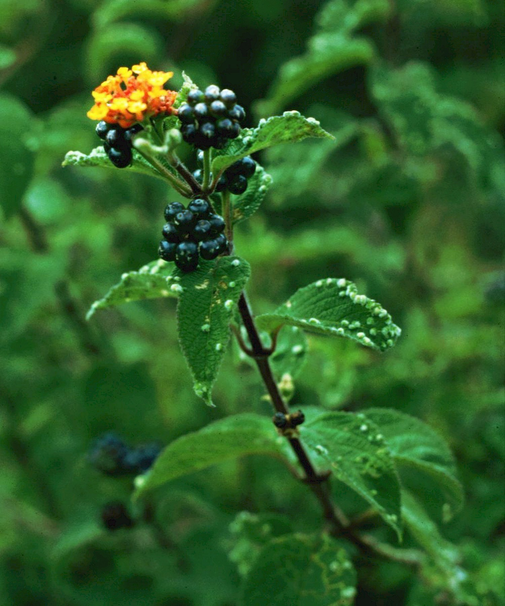

Rabies is the contamination from raw flesh in the body. Plants do not often get rabies, but any other creature can. The closer their species is to that of plants, they cannot get rabies, so much so as is that.
The etymology of "rabies", as a word, comes from two different roots, "raw" & "bies". "Raw" means that something has not been cooked or is dead. In Dutch, and preserved in Afrikaans, "raw" is synonymous with "remains". It is speaking about the remains of some sort of person. When we look at "bies", in Dutch and Afrikaans, it is pronounced more so such as, "beueus", close to the word beau, in English. Further back from there, we see usage of the word, "bies", meaning man, person, body, or flesh. It was later used as a term of skin, as can be seen in Afrikaans, for fur trading. Together, the words making "rabies", "raw" "bies", mean dead bodies.
Now, if you have already read my Cancer Research Document, you will know that dead bodies are also, found in Cancer. This is true, but the rate at which the tumor is forming is different within cancer. It is more of that from that of semen and milk, with bone growths such as from those, not dead bodies.
Other ways of developing rabies is from eating feces. If the feces is that of a carnivore or meat eating person or creature, rabies can develop. This goes so far as cultivating land with feces, such as this, for agriculture. An example of this can be a starving creature, locked in a cage without food, and only feces. Drinking such urine can, also, begin to develop rabies. Eating any urine or feces is a start to developing rabies. This is because it begins to condition the body to accept remains of a creature or person as edible food, having their fluids in it.
Today, November 4, 2025, is a day marking the discovery of an extremely severe global rabies outbreak. Currently, rabies is in plant-based foods, most people, and most animals (including insects). While insects do aid in detoxing rabies, they also carry other forms of contaminants, such as N-Contamination. While N-Contamination is lethal in high doses or without means of detoxing the contamination, it does serve a purpose here. The ability it has to provide Nuclear Cook, noted at the bottom of the linked Research Document, allows for its use to cook rabies, existing in a living body. While this knowledge is helpful in order to feel calm and manage the amount of N-Contamination within the body, it is not completely necessary, if insects are able to continue to share healing with their blood drawing in the Organic Network.
Several problems have caused this outbreak, one being a recent celestial body explosion. This explosion caused an extreme charge to further N-Contamination into a global pandemic, known as Covid. Other causes include the following: meat industrialisation, farming industrialisation, antibiotic misuse, nuclear warfare, excess nuclear electricity, and the normalisation of meat diets. Further, we are uncertain of the extent of what cannibalism could have been taking place, during these times of pandemonium.
Cannibalism stems from the roots: "cannabis", "bal", and "ism". What that means, put together, is the demonisation of the eating of Cannabis. This would then cause, in historical times, eating of dead bodies for Cannabis, from starvation (occassionally famine), and then would form into outbreaks of Rabies. It is such form of Rabies, that we are seeing today in majority of the cases. See my Plant-Based Taurine Research Document for more information.
This rabies pandemic started in Early February of 2019. It is at the extent of generations of starvation from groomed survival on meat from meat. This type of survival causes an experience such as a loss of conciousness at eating nutrition. This is where the common use of the word "rabid" comes from.
Major symptoms of Rabies begin with the taste of remains. Saliva becomes like flowing remains. Depending on the amount of rabies contamination, up to foaming of remains saliva can occur (commonly known from wildlife instances). Other symptoms and post-cursoring conditions include: deep bone marrow rotting and bone fracturing, bone displacement, mental fogginess, intense confusion, lost agility, rapid aging, loss of dexterity, loss of muscle tissue, malnourishment, deep fracturing, bone softness, neural decay, nervous decay, and deepening forms of decay within the body.
In cases, patients can be seen without the ability to digest or detox out other forms of contamination coexisting along, from the rabies or from the environment. Symptoms can worsen to the state of the loss of bodily functions, leading to the loss of bodily control.
Schizophrenia is a precursoring condition from rabies, causing a loss of control of the body, seeming as though a person is becoming someone else. This occurs from failures to detoxify the remains, causing malformations in the brain and body. A loss of conciousness at eating nutrition, also, forms a state of psychosis. This loss of reality is from malnourishment from the amount of detoxing required for the body. If meat is utilized during the detoxing process, then people will go into a state of comatose, where they may be having bodily movement and action occurring, depending on how they have survived on meat diets or with remains.
Microscopically, we can witness that rabies is tied to different forms of dead flesh. Let's begin to take a look with that is available to the public.
When we begin to consider where we have begun with thinking about the Etymology of Rabies, we can start with looking at what is most commonly available, in that sense, ground beef. Ground Beef is a form of remains from the bodies of cows that has been churned by sharp rotary machine blades. The cells, ligaments, and parts of the cows' bodies have been processed and formed into tubular microshapes, as we will see, through methods of extruding and mashing of the cows' bodies.
Above, we can see what that "ground beef" looks like in a photograph.
Here, in this image, above, we can see what raw hamburger looks like, microscopically. It has some muscle tissues (center) that are tubular in shape, having the look of being expunged through extrusion tubes, having an apparent microscopic effect on the cellular shapes.
This series of images begins to show the changes of what occurs to beef, after defrost of the beef. We can see that from left to right, raw to defrosted (frozen in center), the beef becomes soft, from defrosting as is the process, for the processing. Upon ground beef, perhaps, the details do not explain, for this amount.
Above, the gloomy photos of what marinade does to remains is shown. It hydrates the remains to a life-like softness, when "raw". With the uniform methods of machine processing the remains for kitchen production, the cells and tissues begin to soften, over frosting and defrosting cycles, into uniform granule shapes for consumption. After cooking, the marinaded meat retains its straightness from being held life-like in preservatives, while the non-marinaded meat begins to crinkle into segments. Finally, we can see the transverse view of the ligaments or cells are held closely together with the marinading preservatives, while the non-marinaded cooked meat begins to break apart.
When we look at this image of Taurine, a hap-digested instance of Cannabis, more in the Plant-Based Taurine Discovery (linked above under Current Rabies Outbreak), we can begin to reconise what is feathering from the digesting process inside of the pancreas and body. While this may be a cannabidiod derived from meat, from within meat, it does show the process of digestion and the effect that it has upon granules or cells, visually.

Beginning with low heat, these Rabies Cells have been warmed as in cooking. Potentially, these cells can be cooked in order to help them to be detoxed out of the body. When we look at their shape, they look like chopped ground beef cells that have been begun to be digested in a body, struggling to detox an amount of remains. Feathering has begun to occur upon the walls of the cells, from digestion, a collection of digested species in chains have accumulated into Rabies. When does Rabies become human? Let's take a look.

Above, we can see that these human cells have begun to die. Their shapes, like diamond webbing, become granular and dissonant, collapsing in space. The shapes of the human cells reflect that of the shapes of the Glycoproteins found along Rabies Cells. Glycoproteins are embedded as a part, sourcing in growth, from a cell. This means that the glycoproteins found in the majority of cases of Rabies, include human flesh. This links Rabies as a diagnosis for human remains contamination, in source, what looks like, mixed within ground beef from a factory.
When we look at remains and plants that may be best at fighting remains, tobacco is a big icon in fighting off rabies within the sage family. Let's look at why.
The video, above, shows a seed of a tobacco plant germinating into rooting sprout. When we look at the behaviour of the roots, where the plant is taking the place of what would be soil, or remains in the ground, like a snake or fish, swimming down into the ground, growing their tail out and up to the sky's sun. What we can recognise that may help with our remains issue, is how the plant's roots are finely dispersed through the soil. This type of nutrition and behaviour is needed in a body with rabies, to finely, cleanse out the remains. The inflorescence of the plant can showcase the complexity existing in order to cleanse the body. Tobacco is mainly meant to be inhales as living spores in the atmosphere, but there are also seeds that may be available to be eaten, if found already growing.
The size of a seed is, also, an indicator of the finesse offered by a species of plant in growth in soil. Fine soil means fine seeds are able to grow easily. Rough soil means that larger seeds may have a grander success.


Other options in botany are Lantana Berries and Magnolia Berries. While less common, they are easily grown in most areas and do have the effacing numbers similar to that of the Tobacco's flowers. These types of plants are needed to be eaten with caution. The seeds or berries that are eaten, need to be eaten when it is approriate, in relation, with the plant. When it is recognised that a seed has already grown, a Tobacco seed can be eaten, same goes for the berries of Lantanas and Magnolias. These berries and seeds can otherwise be lightly chewed and swallowed, when ripenly fallen from the plant, if your soil is properly distributed or given outside, for security of the plants' species' lives.
Beyond this sort of botany, maintaining a cannabis inclusive kosher vegan diet will keep the rabies away. Cigarettes lit using matches are recommended in place of vaping, in order lower amounts of N-Contamination having purpose in the body.
← Navigation